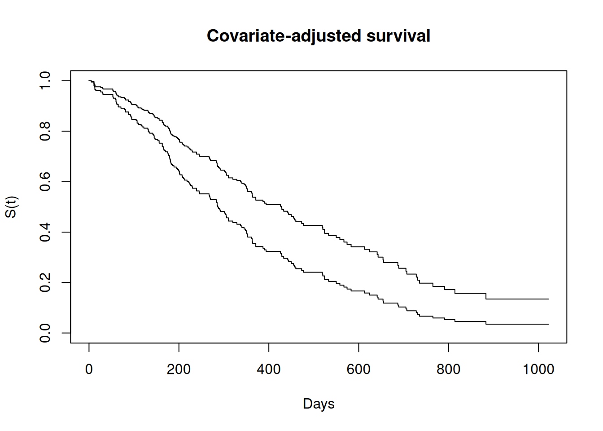
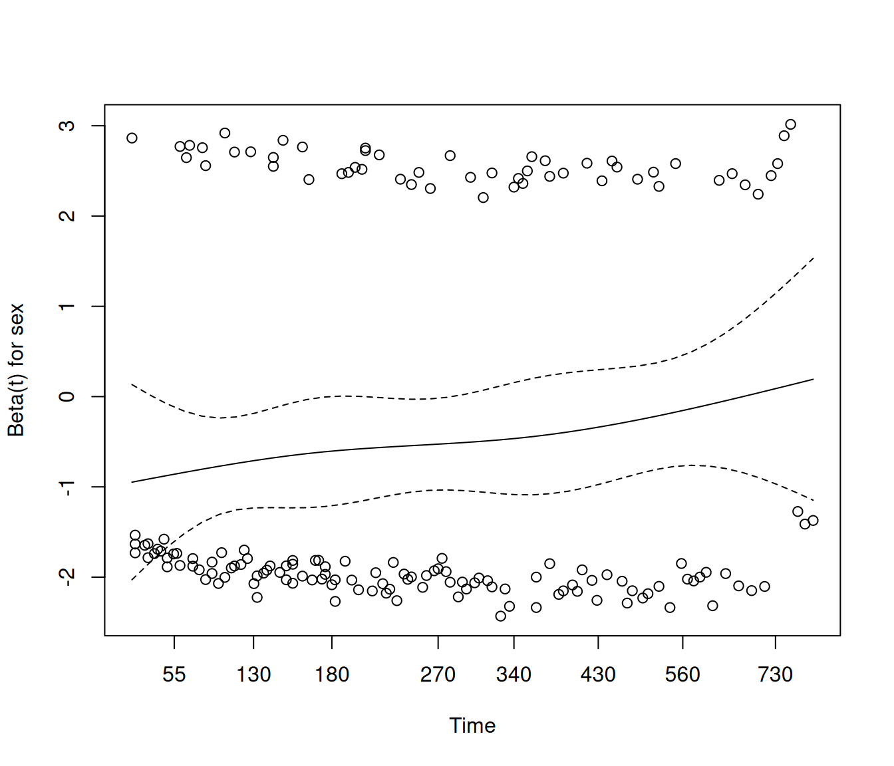
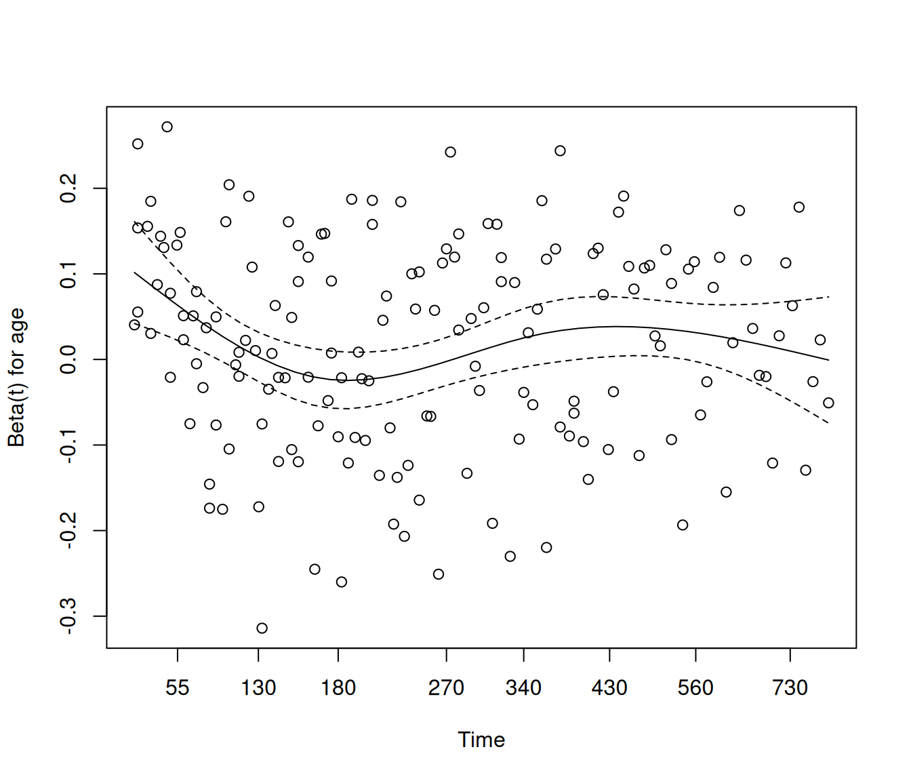
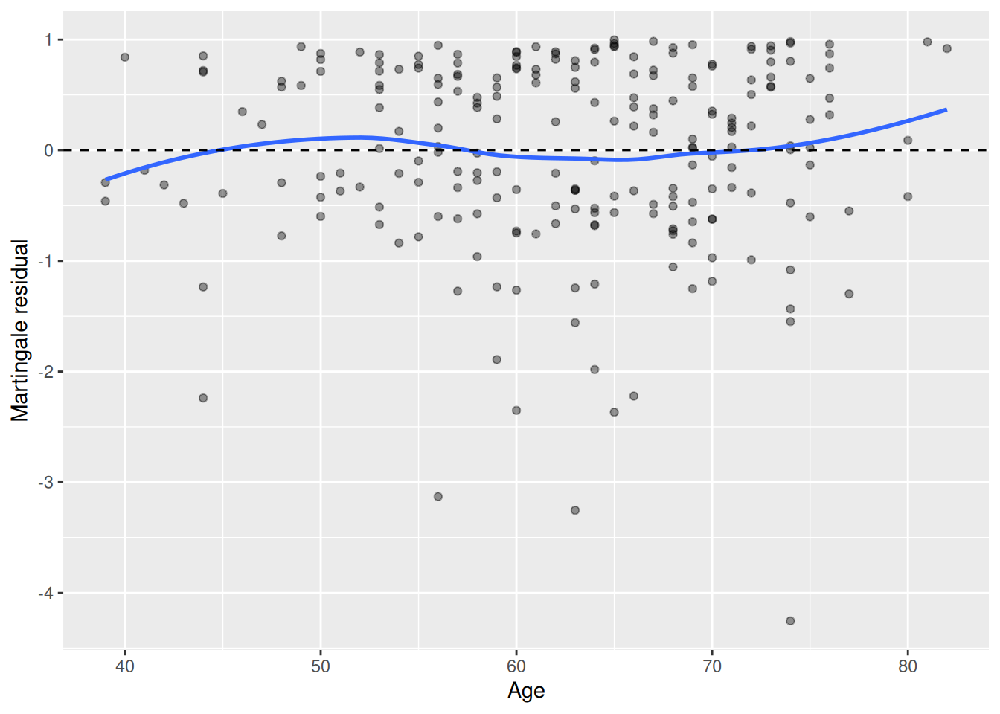
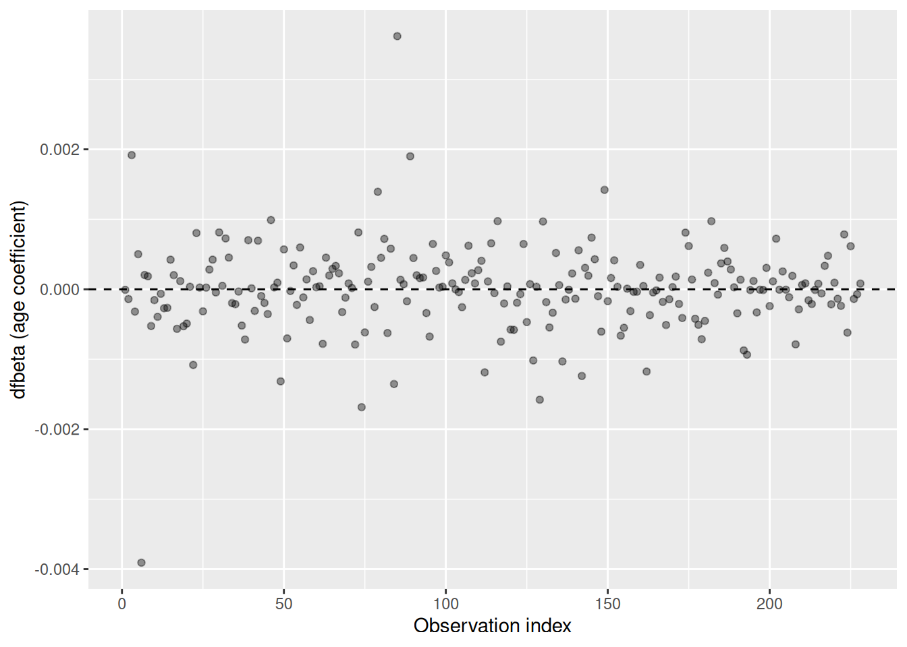

In the previous section we explored an effective method for univariate analysis, and even extended this to comparing a few discrete groups e.g. disease categories, sex, age groups. Can we extend this to studying the effects of a number of covariates, similar to how we do regression modelling?
3.1 Basic theory of survival/hazard curves
Starting with just survival times, we can define the probability density of survival times as \(f(t)\), where:
It’s often even, even more interesting to think about the hazard function. If we ask, what is the probability of a subject dying at 5 years, it’s obvious that the subject was alive up until year 4. So it’s natural to ask about the instantaneous hazard of dying at year 5, conditional of being alive until year 5. This is different to asking about the unconditional probability density of a subject dying at exactly 5 years. The hazard function incorporates ageing and knowledge accumulated throughout the study and provides information more relevant to making decisions through time.
We can define the hazard function as
\[
h(t) = \frac{f(t)}{S(t)}
\]
This is essentially the unconditional probability of seeing an event at time t, scaled by the survival of subjects up until time \(t\).
We can define the cumulative hazard function as
\[H(t) = \int_0^t h(u)\,du\]
This is a little like the accumulated hazard, or the cumulative force of mortality.
Substituting this expression back into our cumulative hazard function we get:
\[\int_0^t h(u)\,du = -\int_0^t \frac{d}{du}\log S(u)\,du = -\big[\log S(u)\big]_0^t = -\log S(t) + \log S(0)\] As \(S(0) = 1\), we have \(\log S(0) = 0\), so
\[H(t) = -\log S(t)\]
Rearranging we get back to the survival function:
\[\boxed{S(t) = e^{-H(t)}} \tag{3.1}\]
It should now be clear there is a close relationship between the density function, hazard function and suvival function. If one is able to specify the hazard function, then the cumulative hazard, and hence, the survival function are also specified.
3.2 Cox Proportional Hazards Model
We are often in a setting where we may wish to see if survival is more favorable under a “new” treatment when compared with the “standard.” We need a model to compare the relative survival experience of the two treatment groups, and give us the ability to adjust for other patient characteristics.
Fully parametric models (models that explicitly describe the statistical distribution of the hazard function) can certainly be used to accomplish this goal. However, these added assumptions are often not required and require more justification.
Survival time models that have a fully parametric regression structure but leave their dependence on time unspecified are called semi-parametric regression models. The most common is the Cox proportional hazards model.
If we start with a constant hazard function with respect to time:
\[
h(t) = 0.3
\] A common parameterisation is to ensure that this value is positive by letting the hazard rate at baseline be \(\beta_0\) and taking the exponent so we have
\[
h(t) = e^{\beta_0}
\] It would be great to add other covariates to this function
\[
h(t, x) = e^{\beta_0 + \beta_x}
\]
If we take \(e^{\beta_0}\) as our baseline hazard rate
\[
h(t, x) = e^{\beta_0}e^{\beta_1x} \\
= h_0(t)e^{\beta x}
\] The hazard function originally expressed is actually the product of two functions, the baseline hazard \(h_0(t)\), which characterizes how the hazard function changes as a function of time. The other function, characterizes how the hazard function changes as a function of the covariates.
In the above example, is \(x\) is a dichotomous variable e.g. \(x_1 = 1\) for female and \(x_0 = 0\) for male we have
\[
HR(t, x_1, x_0) = e^\beta
\]
We can see three important results:
The hazard ratios are obtained directly from the regression coefficients (which we will learn to fit soon).
There is no dependence on time, as the baseline hazard rate cancelled out.
This is called a proportional hazards model as there is a multiplicative relationship with covariate values and the baseline hazard.
The implication here, are the assumptions around the proportional effect being constant over time.
Note
Note: We haven’t discussed covariates that may change over time, this is a common extension that we will cover later.
3.3 Fitting a Cox Proportional Hazards Model
We fit a Cox PH model using coxph() from the {survival} package. The response is a Surv object encoding the event time and censoring indicator, exactly as used in the Kaplan-Meier estimator. We’ll use the lung dataset, which contains survival data from an NCCTG lung cancer trial with several patient-level covariates.
The model we are fitting is
\[
h(t) = h_0(t) \exp{(\beta_0 + \beta_1x_1 + ...)}
\] The coxph() function estimates the partial likelihood — it finds \(\hat{\beta}\) without needing to specify or estimate the baseline hazard \(h_0(t)\). That is the key advantage of the Cox model: it is semiparametric in that the baseline hazard is left completely unspecified.
We will be using the lung dataset from the {survival} package. This dataset measures survival in patients with advanced lung cancer from the North Central Cancer Treatment Group. For more information see Section 1.4.
cox_fit <-coxph(Surv(time, status) ~ sex + age,data = lung)summary(cox_fit)
Call:
coxph(formula = Surv(time, status) ~ sex + age, data = lung)
n= 228, number of events= 165
coef exp(coef) se(coef) z Pr(>|z|)
sex -0.513219 0.598566 0.167458 -3.065 0.00218 **
age 0.017045 1.017191 0.009223 1.848 0.06459 .
---
Signif. codes: 0 '***' 0.001 '**' 0.01 '*' 0.05 '.' 0.1 ' ' 1
exp(coef) exp(-coef) lower .95 upper .95
sex 0.5986 1.6707 0.4311 0.8311
age 1.0172 0.9831 0.9990 1.0357
Concordance= 0.603 (se = 0.025 )
Likelihood ratio test= 14.12 on 2 df, p=9e-04
Wald test = 13.47 on 2 df, p=0.001
Score (logrank) test = 13.72 on 2 df, p=0.001
3.4 Interpretation
3.4.1 Coefficients and hazard ratios
The raw coefficients \(\hat{\beta}\) are on the log-hazard-ratio scale. Exponentiating them gives hazard ratios directly. The {broom} package makes this tidy:
# A tibble: 2 × 5
term estimate conf.low conf.high p.value
<chr> <dbl> <dbl> <dbl> <dbl>
1 sex 0.599 0.431 0.831 0.00218
2 age 1.02 0.999 1.04 0.0646
Each hazard ratio represents the multiplicative change in the instantaneous hazard associated with a one-unit increase in the covariate, holding all other covariates constant.
For example, if sex has \(HR < 1\), female patients (coded 2) have a lower hazard of death relative to males, i.e. better survival after adjusting for age.
3.4.2 Confidence intervals
95% confidence intervals on the hazard ratio scale are obtained by exponentiating the Wald-based interval on the log scale: \(e^{\hat{\beta} \pm 1.96 \cdot SE(\hat{\beta})}\).
3.4.3 Global tests
summary() reports three global tests of whether any covariate has a significant effect:
Test
Basis
Likelihood ratio
Compares log-likelihoods of full vs null model
Wald
Based on \(\hat{\beta} / SE(\hat{\beta})\)
Score (log-rank)
Based on score function at \(\beta = 0\)
In large samples all three are equivalent, the likelihood ratio test is generally preferred.
3.5 Estimating Baseline Hazard & Survival Function
Although the Cox model does not require specifying \(h_0(t)\), once we have estimated \(\hat{\beta}\)s we can recover a non-parametric estimate of the cumulative baseline hazard \(\hat{H}_0(t)\) and baseline Survival Function \(S_0(t)\) by setting all coefficient values to zero.
Centering Covariates
What is the interpretation of assuming the baseline survival or hazard rate is obtained by setting covariates to zero?
Does this make sense?
Should we considered centering our covariates to obtain more faithful estimates of baseline hazard curves?
By default basehaz() uses the mean of all covariates for computational stability:
Many textbooks refer to H(t; 0) as “the” baseline hazard for a Cox model; this is returned by the centered= FALSE option. However, due to potential overflow or underflow in the exp() function this can be a very bad idea in practice
# Cumulative baseline hazard (at mean of covariates by default)bh <-basehaz(cox_fit, centered = T) # centered=FALSE gives H0(t)head(bh)
More usefully, survfit() applied to a fitted Cox model produces survival curves at specified covariate values, resulting in a covariate-adjusted survival curve:
# Survival curve for a 60-year-old female (sex=2) new_patient <-data.frame(age =c(60, 60), sex =c(1, 2))cox_surv <-survfit(cox_fit, newdata = new_patient)plot(cox_surv, xlab ="Days", ylab ="S(t)", main ="Covariate-adjusted survival")

3.6 Diagnostics
We need to check the basic statistical assumptions behind the Cox proportional hazards model.
Proportional hazards assumption
Survival time of one patient does not depend upon the survival time of another.
Uninformative Censoring
3.6.1 Proportional hazards assumption
The proportional hazards assumption states that the hazard ratio between any two covariate patterns is constant over time. Violation means the effect of a covariate changes as follow-up progresses.
The standard test uses scaled Schoenfeld residuals (cox.zph()). If the PH assumption holds, the residuals should show no trend over time, and the test \(p\)-value should not be small.
ph_test <-cox.zph(cox_fit)ph_test
chisq df p
sex 2.608 1 0.11
age 0.209 1 0.65
GLOBAL 2.771 2 0.25
plot(ph_test)


A statistically significant result for a covariate (small \(p\)-value) suggests that covariate’s effect is not constant over time. Remedies include:
Adding a time-by-covariate interaction term
Stratifying on the offending variable (see Section below)
Fitting a time-varying coefficient model
3.6.2 Goodness of fit
Martingale residuals assess whether the functional form of each continuous covariate is appropriate. They lie in \((-\infty, 1]\); a LOESS smoother of residuals vs covariate values should be flat around zero if the linear form is correct.
lung_complete <-na.omit(lung[, c("time", "status", "age", "sex")])mart_resid <-residuals(cox_fit, type ="martingale")# Check functional form of ageggplot(data.frame(age = lung_complete$age, resid = mart_resid), aes(age, resid)) +geom_point(alpha =0.4) +geom_smooth(method ="loess", se =FALSE) +geom_hline(yintercept =0, linetype ="dashed") +labs(x ="Age", y ="Martingale residual")
`geom_smooth()` using formula = 'y ~ x'

Deviance residuals (a normalised transform of martingale residuals) are more symmetric and useful for spotting poorly-fitted individuals:
Points with \(|r_D| > 2\) are candidates for closer inspection.
3.6.3 Influence
dfbeta residuals estimate how much each coefficient changes if observation \(i\) is deleted. Large values flag influential observations.
dfbeta_resid <-residuals(cox_fit, type ="dfbeta")# Plot influence on the 'age' coefficient (column 2)ggplot(data.frame(index =seq_along(dfbeta_resid[, 2]), dfbeta = dfbeta_resid[, 2]),aes(index, dfbeta)) +geom_point(alpha =0.4) +geom_hline(yintercept =0, linetype ="dashed") +labs(x ="Observation index", y ="dfbeta (age coefficient)")

3.7 Stratification
If a covariate violates the PH assumption but we still want to adjust for it, we can stratify on it. The model estimates a separate baseline hazard \(h_{0k}(t)\) for each stratum \(k\), while keeping the \(\beta\) coefficients common across strata.
cox_strat <-coxph(Surv(time, status) ~ age +strata(sex),data = lung)summary(cox_strat)
Call:
coxph(formula = Surv(time, status) ~ age + strata(sex), data = lung)
n= 228, number of events= 165
coef exp(coef) se(coef) z Pr(>|z|)
age 0.016215 1.016347 0.009187 1.765 0.0776 .
---
Signif. codes: 0 '***' 0.001 '**' 0.01 '*' 0.05 '.' 0.1 ' ' 1
exp(coef) exp(-coef) lower .95 upper .95
age 1.016 0.9839 0.9982 1.035
Concordance= 0.546 (se = 0.026 )
Likelihood ratio test= 3.18 on 1 df, p=0.07
Wald test = 3.12 on 1 df, p=0.08
Score (logrank) test = 3.12 on 1 df, p=0.08
Note
Stratification removes the stratifying variable from the set of estimated hazard ratios. You cannot obtain a HR for sex from this model. Use stratification when you need to control for a variable but are not interested in its effect estimate.
3.8 Time-dependent covariates
When a covariate’s value changes during follow-up (e.g., a drug dose, lab value, or treatment switch), the standard Cox model cannot handle it correctly. The solution is to expand the dataset into counting process format using (tstart, tstop] intervals.
It’s important that covariates only include information about the past and present. An example of where time dependent covariates can be used is when there is a change in medication because a new treatment becomes available. An example where it is not appropriate is when the medication is changed because the status of the patient deteriorates (is related to the outcome). This may then produce the counter-intuitive conclusion that changing the medication resulted in poorer survival.
We will use a short example from the Stanford Heart Transplant data.
# Illustrative example using the heart dataset head(heart)
# A tibble: 4 × 5
term estimate conf.low conf.high p.value
<chr> <dbl> <dbl> <dbl> <dbl>
1 transplant1 0.990 0.535 1.83 0.974
2 age 1.03 1.00 1.06 0.0476
3 year 0.864 0.752 0.992 0.0378
4 surgery 0.529 0.257 1.09 0.0827
Caution
Time-dependent covariates must be defined using only past information — values known before the start of each interval. Using future information (e.g., a post-event measurement) introduces immortal time bias and will give misleading results.
Consider if we included a baseline covariate for obtaining a transplant at some point. Recieving (or not) a transplant leaks information about patient survival characteristics and will bias estimates of survival prior to the transplant occuring. Transplant patients had to “survive” the pre-transplant window to receive the organ, that waiting period is erroneously attributed as a survival benefit of the transplant itself.
Bradburn, Michael J, Taane G Clark, Sharon B Love, and Douglas G Altman. 2003. “Survival Analysis Part III: Multivariate Data Analysis–Choosing a Model and Assessing Its Adequacy and Fit.”British Journal of Cancer 89 (4): 605–11.
Bradburn, Mike J, Taane G Clark, Sharon B Love, and Douglas Graham Altman. 2003. “Survival Analysis Part II: Multivariate Data Analysis–an Introduction to Concepts and Methods.”British Journal of Cancer 89 (3): 431–36.
Clark, Taane G, Michael J Bradburn, Sharon B Love, and DG2394469 Altman. 2003a. “Survival Analysis Part IV: Further Concepts and Methods in Survival Analysis.”British Journal of Cancer 89 (5): 781–86.
Clark, Taane G, Michael J Bradburn, Sharon B Love, and Douglas G Altman. 2003b. “Survival Analysis Part i: Basic Concepts and First Analyses.”British Journal of Cancer 89 (2): 232–38.
Harrell, Frank E et al. 2001. Regression Modeling Strategies: With Applications to Linear Models, Logistic Regression, and Survival Analysis. Vol. 608. Springer.
Hosmer Jr, David W, Stanley Lemeshow, and Susanne May. 2008. Applied Survival Analysis: Regression Modeling of Time-to-Event Data. John Wiley & Sons.
Sjoberg, Daniel D., Shreya Sreeram, Mark Baillie, Charlotta Fruechtenicht, Steven Haesendonckx, and Tim Treis. 2026. Ggsurvfit: Flexible Time-to-Event Figures. https://github.com/pharmaverse/ggsurvfit.